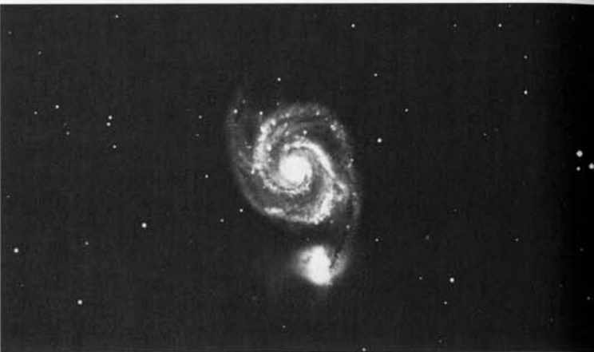

涡状星系 · Whirlpool Galaxy (NGC 5194)

"Once believed to be a great swirling nebula, M51 is now known to be the finest example of a face-on spiral galaxy."
"曾被认为是一个巨大旋转星云的M51，如今被公认为正面朝向螺旋星系的最佳典范。"
基本参数 | Essential Parameters
| 参数 Parameter | 数值 Value |
|---|---|
| 类型 Type | 旋涡星系 Spiral Galaxy (Sc) |
| 星座 Constellation | 猎犬座 Canes Venatici |
| 赤经 Right Ascension | 13h 29m.9 |
| 赤纬 Declination | +47° 12' |
| 星等 Magnitude | 8.4 |
| 表面亮度 Surface Brightness | 13.1 |
| 角直径 Angular Size | 11'.2 × 6'.9 |
| 距离 Distance | 1500万光年 15 million l.y. |
| 发现者 Discoverer | 梅西耶 Charles Messier (1773) |
历史发现 | Historical Discovery
The Whirlpool Galaxy holds a special place in the annals of astronomy, not merely for its visual splendor, but for the pivotal role it played in transforming our understanding of the cosmos. Charles Messier first stumbled upon this celestial wonder on 13 October 1773, while observing a comet that graced the night sky that year. His initial observation revealed "a very faint nebula without stars," and he would later catalog it as M51 on 11 January 1774.
涡状星系在天文史上占据着特殊地位，不仅因其壮美的外观，更因其在人类认知宇宙过程中所扮演的关键角色。查尔斯·梅西耶于1773年10月13日在观测当年出现的一颗彗星时首次邂逅了这一天体。他的初步观测记录显示"一个极其暗淡的无星云团"，后于1774年1月11日将其编入星表，编号M51。
"Nearby there is an eighth-magnitude star."
"邻近存在一颗八等星。"
Messier's original notes described M51 as a double nebula whose two components appeared to touch each other, separated by just 4'35". He chose not to catalog each bright component separately—a decision that has puzzled astronomers ever since. Was it due to the object's small apparent size compared to the grand Orion Nebula or Andromeda Galaxy? Or perhaps because the Whirlpool and its companion, 9.5-magnitude NGC 5195, located 4' to the north, appeared more as a single entity than two distinct ones?
梅西耶的原始记录将M51描述为一个双星云，两个组成部分看起来相互接触，间距仅4分35秒。他选择不将每个明亮部分单独编目——这一决定至今令天文学家困惑不已。是因其表观尺寸相较于猎户座大星云或仙女座星系显得过小？还是因为涡状星系与其伴星系（9.5等的NGC 5195，位于北侧4角分处）看起来更像单一实体而非两个独立天体？
宇宙视野的革命 | A Revolution in Cosmic Perspective
The Whirlpool Galaxy's true significance emerged dramatically in 1845, when William Parsons, 3rd Earl of Rosse, using his legendary 72-inch speculum mirror reflector at Birr Castle, detected what he described as the nebula's "spiral convulsions." This observation elevated M51 to unprecedented astronomical fame—it became the first galaxy proven to possess spiral structure.
涡状星系的真正重要性在1845年戏剧性地显现出来——威廉·帕森斯伯爵（罗斯三世）在比尔城堡使用其传奇的72英寸金属镜面反射望远镜观测到了他所描述的星云"螺旋状涡旋"。这一观测使M51获得了前所未有的天文地位——它成为首个被证实具有螺旋结构的星系。
"Rosse detected the nebula's 'spiral convulsions' in 1845 with his 72-inch speculum mirror reflector, making M51 the first galaxy shown to have spiral structure."
"1845年，罗斯伯爵通过其72英寸金属镜面反射望远镜观测到该星云的'螺旋状涡旋'，使M51成为首个被证实具有螺旋结构的星系。"
Prior to this breakthrough, eighteenth and nineteenth-century astronomers like John Herschel had come remarkably close to grasping the object's true nature. Herschel's drawing of M51 shows a split ring surrounding a central condensation—a view that closely resembled his concept of the Milky Way's structure. The Reverend William Henry Smyth went so far as to describe the nebula as "a stellar universe, similar to that to which we belong, whose vast amplitudes are in no doubt peopled with countless numbers of percipient beings."
在此突破之前，约翰·赫歇尔等18至19世纪的天文学家已对该天体的真正本质有了极为接近的认知。其绘制的M51图像呈现环绕中央凝聚体的分裂环结构，这种视角与他所构想的银河系结构惊人相似。威廉·亨利·斯迈思甚至将其描述为"一个恒星宇宙，与我们所属的星系类似，其广袤疆域无疑栖息着无数具有感知能力的生命"。
However, these statements were grounded in the cosmology of the day. Astronomers did not envision a galaxy of countless suns, but rather a hazy vortex that validated the French mathematician Pierre-Simon de Laplace's nebular hypothesis—which proposed that our solar system condensed from a rotating gaseous nebula. This notion of M51 as a solar system in formation was not shattered until 1923, when astronomers finally discovered the true nature of the mysterious spiral nebulae.
然而，这些论断基于当时的宇宙学框架。天文学家并未将其视作由无数恒星组成的星系，而是看作印证法国数学家拉普拉斯星云假说的朦胧涡旋——该学说认为太阳系由旋转的气态星云凝聚而成。直到1923年，当神秘螺旋星云的真正本质被揭示，M51作为"形成中的太阳系"这一认知才被彻底颠覆。
伴星系与潮汐之舞 | Companion Galaxy and Tidal Dance
The relationship between M51 and its companion, NGC 5195, represents one of the most compelling examples of galactic interaction in the nearby universe. Situated just 4' north of the main galaxy, this smaller companion has profoundly influenced M51's magnificent spiral structure through gravitational tidal interactions over billions of years.
M51与其伴星系NGC 5195的关系代表了近邻宇宙中最为引人入胜的星系相互作用范例之一。这颗较小的伴星系位于主星系北侧仅4角分处，在数十亿年间通过引力潮汐相互作用深刻地塑造了M51壮观的螺旋结构。
"M51's spiral shape may be the result of tidal interactions with NGC 5195. Apparently the smaller companion circles the great Whirlpool in an orbit inclined 73° to M51's disk. The latest tidal event might have occurred about 56 million years ago."
"M51的螺旋结构可能是其与NGC 5195潮汐相互作用的结果。这颗较小伴星系显然以73°倾角环绕巨大的涡状星系盘面运行。最近一次潮汐作用事件可能发生于约5600万年前。"
Perhaps most remarkably, a faint bridge of gas connects M51 to NGC 5195—a structure whose visibility through small telescopes has long been debated among amateur astronomers. Some argue it cannot be seen except from under a dark sky with at least a 12-inch telescope, while others claim it can be glimpsed in a
🔒 受限于篇幅，本文仅展示部分样章。O'Meara 先生完整的观测手记、实测数据及未公开的独家配图，请参阅原著双语典藏版。
👉 立即在闲鱼获取《DEEP-SKY COMPANIONS》中英双语高清典藏版